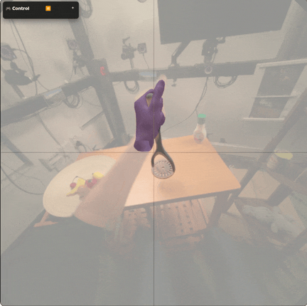

Under review, 2026
@article{aytekin2026grasp,
title={Grasp in Gaussians: Fast Monocular Reconstruction of Dynamic Hand--Object Interactions},
author={Aytekin, Ayce Idil and Chen, Xu and Shen, Zhengyang and Beeler, Thabo and Rhodin, Helge and Dabral, Rishabh and Theobalt, Christian},
year={2026}
}